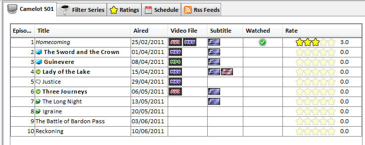

| The Episodes Panel |
|---|
|

|
The episodes panel consists of a table with 7 columns:
- The episode number: The episode number in the current season.
- The Episode title: The title of the episode.
If an icon appears before the title means that:
- :
The episode is aired but not downloaded yet
- :
The episode's video has been downloaded but subtitles are not
- :
Episode and subtitles are downloaded but not renamed
- :
The episode's video and subtitles are downloaded and renamed.Should watch it!!!
Double clicking on the title will open the media player for watching the episode.
- Aired:The date when the episode has been or will be aired. The date
format is defined in the [Options].
- Video File:If the episodes has been downloaded or not. If the series
directory is provided in [Add/Edit Series Panel] an icon of
the video type is displayed. Supported video types are avi, mkv, mpg and mp4
- Subtitles:If subtitles have been downloaded or not.Also which subtitles has
been downloaded (None, primary language, secondary language or both).
Supported subtitles are srt and sub
- Watched:If the episodes has been watched or not.
- Rate:The episode's rate.You can rate only episodes that are marked as seen.
To rate an episode double click the rate cell.
To edit an episode click on a cell , press F2 and it will be converted to edit mode.
If you have given the local directory in [Add/Edit Series Panel] then
the application search the series directory and updates the downloaded and subtitles info.
Right clicking on an episode will bring up the [Episodes pop up menu].
|